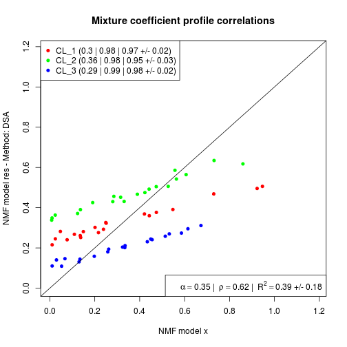

Complete Deconvolution using Digital Sorting Algorithm (DSA)
Usage
gedAlgorithm.DSA(..., data = NULL, exact = TRUE, log = NULL)
Arguments
- ...
- extra parameters DSAproportionspassed to
mlsei. - data
- markers as
MarkerListobject. - exact
- logical that specifies if one should impose
a sum-to-one (
TRUE) or sum-to-less-than-one (FALSE) constraint on the proportions. - log
- indicates if the data are in log-scale or
should be converted to linear-scale. This is relevant
because the DSA algorithm assumes that the input mixed
data are in linear scale (i.e. not log-trasnformed).
If
NULL, then data's scale is detected bylink{is_logscale}and conversion to linear-scale is performed if necessary. IfTRUEthe data is exponentialised (using log base 2). IfFALSEthe data is left unchanged (the detected log scale is displayed in verbose mode). If a number, then it is used as the log base to exponentialise the data.
Description
The method “DSA” implements the Digital Sorting Algorithm (DSA) proposed by Zhong et al. (2013), which performs complete gene expression deconvolution using a set of marker genes only.
References
Zhong Y, Wan Y, Pang K, Chow LM and Liu Z (2013).
"Digital sorting of complex tissues for cell
type-specific gene expression profiles." _BMC
Bioinformatics_, *14*(1), pp. 89. ISSN 1471-2105,
Examples
## Example on dummy/random datax <- rmix(3, 100, 20)# markersml <- getMarkers(x)# deconvolve using DSA (quadratic programming)res <- ged(x, ml, 'DSA', verbose=TRUE, log=FALSE)Using ged algorithm: “DSA”Note: method with signature ‘MatrixData#MarkerList#ANY’ chosen for function ‘nmf’, target signature ‘ExpressionMix#MarkerList#character’. "ExpressionSet#ANY#ANY" would also be validEstimating basis and mixture coefficients matrices from marker features [DSA] Using 15/15 markers to estimate cell proportions: CL_1 CL_2 CL_3 5 5 5 Checking data scale ... NOTE [log] Converting data to linear scale ... SKIP Computing proportions using DSA method ... OK Estimating basis matrix from mixture coefficients [qprog] Not using any marker constraints Timing: user system elapsed 1.060 0.036 1.097 GED final wrap up ... OK# plot against true dataprofplot(x, res)
profplot(t(basis(x)), t(basis(res)), legend=FALSE)